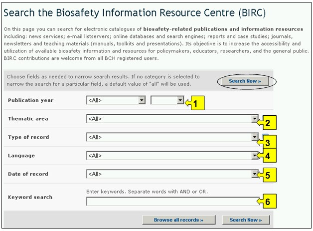
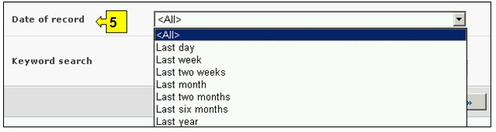
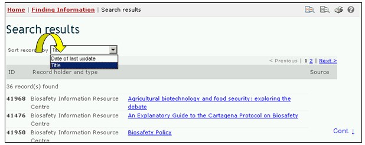
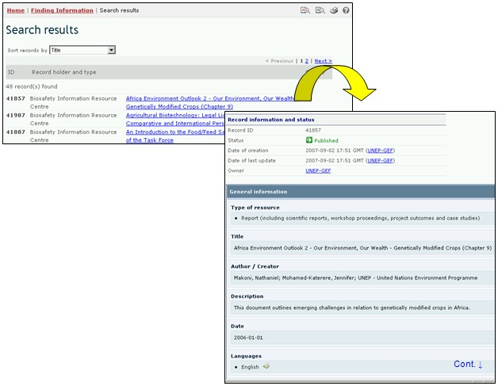

URL: http://bch.cbd.int/database/resources/
L’Article 20 du Protocole crée le CEPRB pour faciliter l'échange d'information et d'expériences relatives aux OVM parmi les Parties dans le but de les aider à appliquer le Protocole. Pour aider dans l’accomplissement de cette fonction, le CEPRB contient des informations pertinentes pour la biosécurité et pour l’application du Protocole, fournies par les Parties, les gouvernements et des organisations.
Le Centre de Ressources d’Information sur Biosécurité (CRIB) contient des catalogues électroniques des publications en rapport à la biosécurité et des ressources d’information pour les responsables des politiques, les éducateurs, les chercheurs et le grand public. Les enregistrements du CRIB peuvent être entrés par tous les utilisateurs ayant un compte au CEPRB.
L’interface de recherche pour le CRIB est accessible depuis le menu déroulant Trouver l'information sur la barre de navigation, ou depuis le lien dans le menu du côté gauche de la page Trouver l'information ou depuis le lien dans le texte Centre de Ressources d’Information sur Biosécurité dans la même page.
Figure 82
Ces liens permettent à l’utilisateur d'avoir accès aux catalogues électroniques des publications en rapport à la biosécurité et des ressources d’information comme suit:
1. Des Ressources Graphiques ;
2. Guides pour l’évaluation et la gestion des risques ;
3. Nouveaux services (y compris les listservs de courriels)
4. Des Numéros spéciaux (Monographies);
5. Des Rapports ;
6. Des Séries / Périodiques ;
7. Du matériel didactique (y compris des manuels, des boîtes à outils et des présentations) ;
8. des Sites web, des recherches ou des références en ligne, des outils.
Sur la page de recherche du Centre de Ressources d’Information sur la Biosécurité (CRIB) il y a six boîtes de critères de recherche pour préciser les recherches dans cette base de données. Chacune a un menu déroulant depuis lequel il est possible de sélectionner le critère désiré. Pour chaque menu déroulant, le choix par défaut est le premier critère en haut de la liste du menu. A droite de chaque boîte, un bouton permet à l’utilisateur d’activer la sélection multiple. Une fois dans le mode sélection multiple il est possible d’ajouter plus de critères à la sélection en cliquant sur le critère approprié tout en pressant sur la touche Ctrl (Contrôle).

Figure 83
La Boite 1 [Année de Publication] liste des options pour la date de publication de l'article. Elle permet à l’utilisateur de choisir seulement l’année exacte de(s) publications recherchées dans la boîte Année. Des intervalles de temps peuvent aussi être filtrés en sélectionnant soit la période antérieure ou celle postérieure à l’année indiquée dans la boîte Année.

Figure 84
La Boîte 2 [Aire thématique] liste les principales aires thématiques des publications disponibles et permet à l’utilisateur de restreindre une recherche à une ou plusieurs de ces aires.

Figure 85
La Boîte 3 [Type d’enregistrement] liste les types de documents stockés dans le CRIB. Ceci permet à l’utilisateur de restreindre la recherche à une source d’information spécifique.

Figure 86
La Boîte 4 [Langue] permet à l’utilisateur de limiter la recherche à des documents dans une ou plusieurs langues.

Figure 87
La Boîte 5 [Date de l’enregistrement] permet à l’utilisateur de restreindre la recherche à la date à laquelle le document a été enregistré dans le CEPRB. Le menu déroulant fournit un certain nombre d’options pour limiter La recherche seulement aux enregistrements soumis au cours de la période sélectionnée (par ex. « dernier jour », « dernier mois », « dernière année », etc.)
Figure 88
La Boîte 6 [Recherche par Mot clé] fournit une opportunité d’utiliser des mots clé pour restreindre la recherche. L’utilisateur peut utiliser une syntaxe standard avec des mots clé (combinaison d’opérateurs AND / OR) pour chercher avec plusieurs mots ou parties centrales de mots (par ex. « Importation OR Exportation »). Une recherche effectuée en utilisant des mots clé produit seulement les résultats d’enregistrements contenant exactement le texte recherché et non pas les synonymes possibles qui n’ont pas été insérés (c’est-à-dire, une recherche avec un mot clé unique « maïs » donnera une liste d’enregistrements contenant le mot « maïs » mais non pas les mots « corn » ou « Zea mays »).

Figure 89
La page de recherche présente trois boutons pour produire une liste d’enregistrements. Le bouton Rechercher (à la fois en haut et en bas de l’interface de recherche) permet à l’utilisateur d’activer une recherche sur la base des critères de recherche sélectionnés dans les boîtes des moteurs de recherche. Les résultats de la recherche sont par défaut classés alphabétiquement par pays. Le bouton Afficher tous les enregistrements (en bas de l’interface de recherche) permet à l’utilisateur d’obtenir une liste de tous les enregistrements dans cette base de données.

Figure 90
Les pages des Résultats de la recherche ont un outil de classement en dessus de la liste d’enregistrements. Celui-ci peut être utilisé pour classer les enregistrements selon des critères spécifiques pour cette catégorie d'information. Notez que les critères de classement changent lorsque l’utilisateur sélectionne des critères de recherche différents.

Figure 91
Exemple : Un utilisateur veut identifier des articles écrits récemment sur des questions de responsabilité. L’utilisateur sélectionne (i) après et 2006 dans les boîtes année de publication et (ii) Responsabilité et réparation dans la boîte Aire thématique. Il clique sur le bouton Rechercher pour obtenir les résultats de la recherche. Les résultats sont affichés dans l’ordre alphabétique par titre d’article.

Figure 92

Figure 93